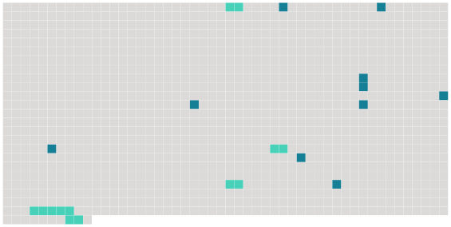

Longueur nb maillons : 15 mentions |
 |
Lorsque le commettant retire la commission d'un garde particulier qu'il emploie, il en informe sans délai le préfet qui met fin à [l'agrément]
Paragraphe 2 : [Agrément] et assermentation [7 phrases]
Article R15-33-27 [2 phrases]
L'arrêté d' [agrément] indique la nature des infractions que le garde particulier est chargé de constater, dans les limites des droits dont dispose le commettant et en application des dispositions législatives qui l'y autorisent. [1 phrases]
Le commettant délivre au garde particulier une carte d' [agrément] qui comporte les mentions prévues par arrêté conjoint du ministre de l'intérieur et des ministres intéressés.
La carte d' [agrément] est visée par le préfet.
Article R15-33-28 [6 phrases]
"
La prestation de serment n'est pas requise à la suite du renouvellement d' [un agrément] , ou d'un nouvel agrément correspondant à une nouvelle commission pour la surveillance de territoires placés dans le ressort du tribunal ayant reçu le serment.
Article R15-33-29-1 [3 phrases]
Article R15-33-29-2 [2 phrases] En cas d'urgence et pour des motifs d'ordre public, le préfet peut suspendre à titre conservatoire [l'agrément du garde particulier] , pour une durée maximale de trois mois, par décision motivée. [1 phrases]
Le préfet informe le commettant et le président du tribunal d'instance auprès duquel le garde a prêté serment de la suspension ou du retrait de [l'agrément] |
 |
La ressource peut être téléchargée sur la page Ortolang
Si vous avez des questions ou vous voyez des erreurs, merci d'envoyer un mail à silvia.federzoni89@gmail.com
Site développé par S. Federzoni (contact)